Confetti Live Trivia
Confetti was a daily live trivia game show on Facebook Watch, with local hosts in the US, Canada, and Mexico.
Facebook Watch hadn’t produced many hit shows yet, so trying new formats that built habitual viewing was a way to learn what worked for the audience.
The goal: ship a simple, fun show and give viewers a reason to come back with real prize money, while getting people familiar with interactive video and a daily game format.
Shipped on Facebook in 2018 and grew to more than 3 million viewers a day across all three countries, giving away over $1 million in prize money.
Every game was a Facebook Live broadcast, so the host, comments and reactions shared one screen. The game had to fit around a video format people already knew, without getting in the way of the host.
Most people found the game in News Feed, so the post changed with the show: a live countdown, an invite to play against friends, the game in progress with questions kept out of the feed, and a recap once it ended. Players could also share their results or a winning card.
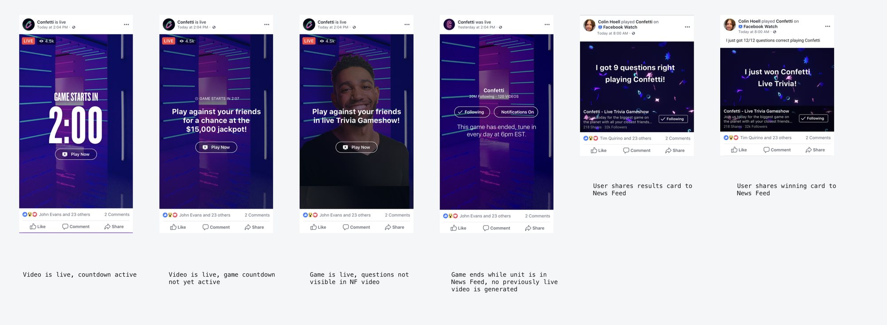
The countdown started as soon as the video went live, giving people time to invite friends before the first question. Players agreed to the terms before playing for real money, and the facepile opened a sheet showing which friends were still in the running and which were just watching.
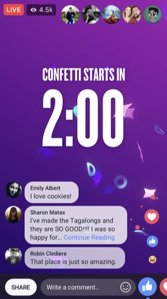
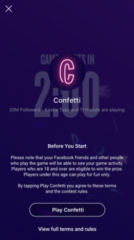
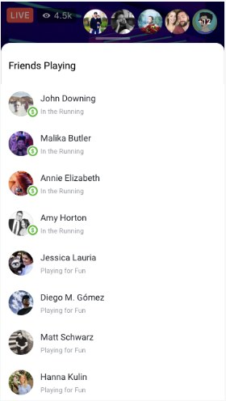
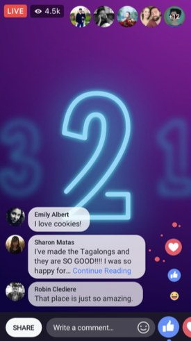
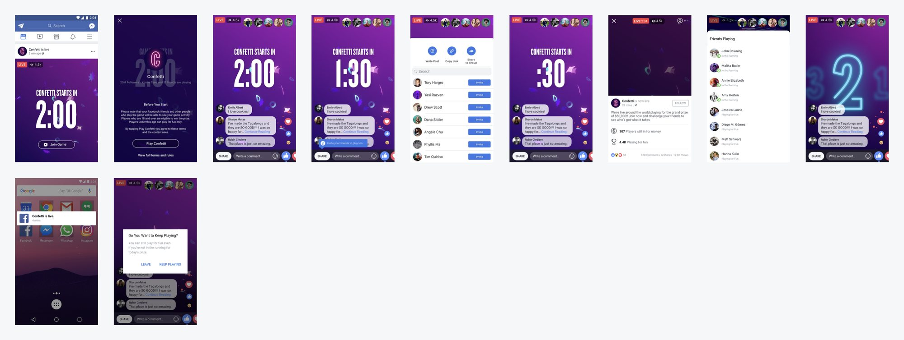
Comments and reactions stepped aside while a question was up, and friends’ answers appeared live next to each option. A choice locked in once tapped, and the host bantered for a few seconds before the answer was revealed. Anyone who joined late could still play along for fun.
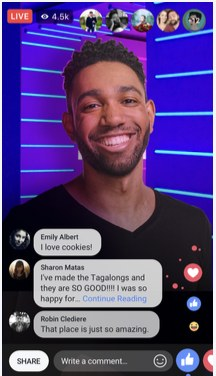
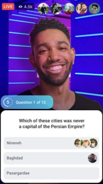
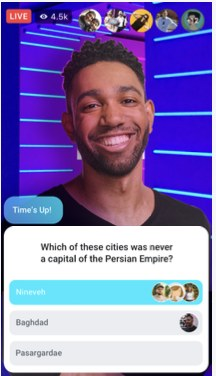
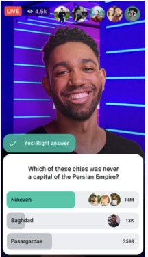
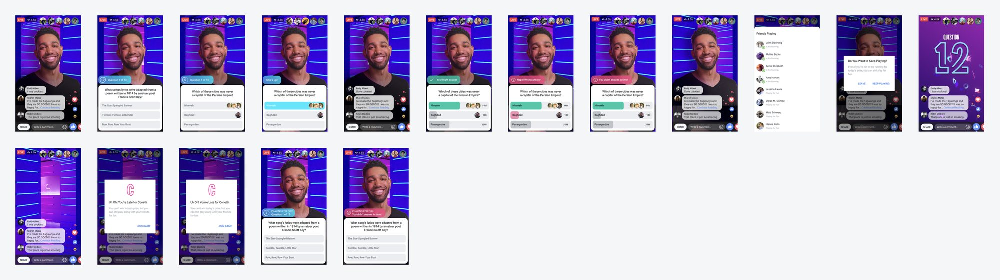
Winners got a celebration card and a prize to claim, and everyone else saw how they did against their friends. The host signed off with a reminder of the next game, and the end card kept the daily time front and center.
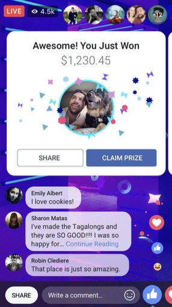
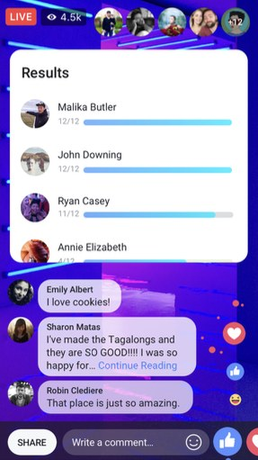
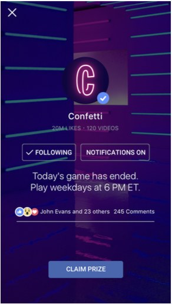
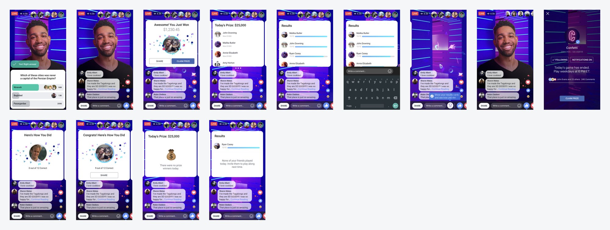
The show’s page on Watch brought together the next game, your results, a leaderboard of friends, and past episodes, on desktop and mobile.
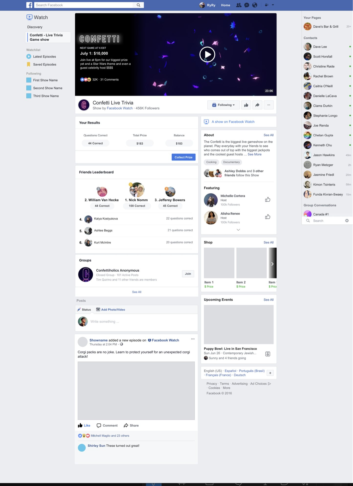
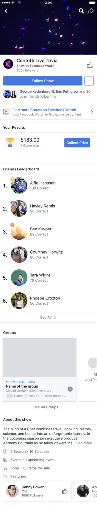
Creating daily habits
Much like Wordle and the other NY Times games, Confetti had to become a daily ritual over time. Seeing social proof and real prize money helped.
Getting outside help
Working with external agencies on branding and production cut the build time massively, and led to a much better product.
Local content matters
The audience differed hugely between the US, Canada, and Mexico, and viewers’ relationship with the host had to work for the show to become a habit. Alex Trebek did a lot for Jeopardy.